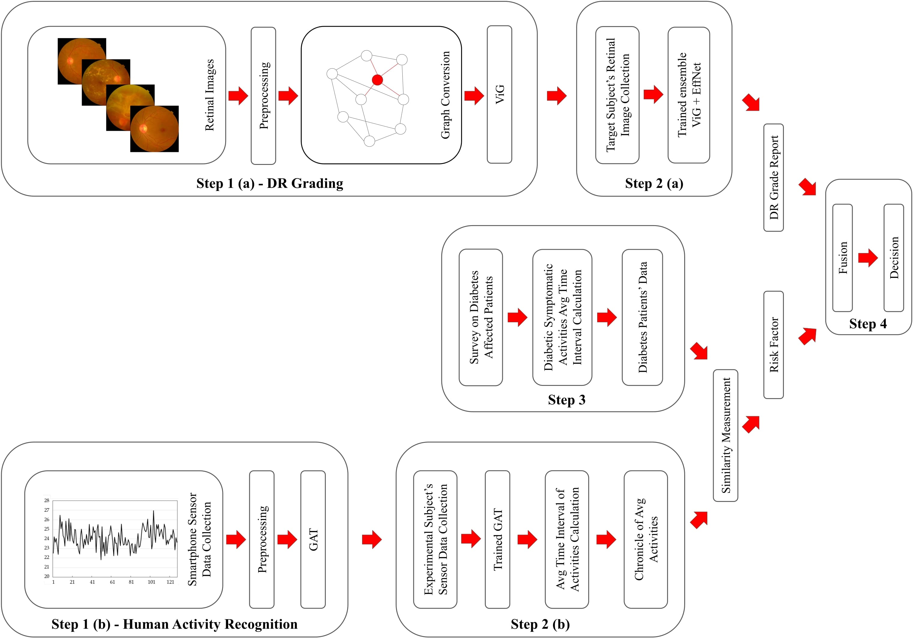
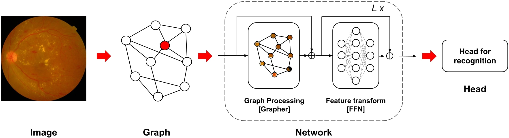
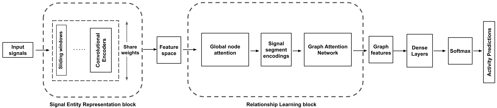
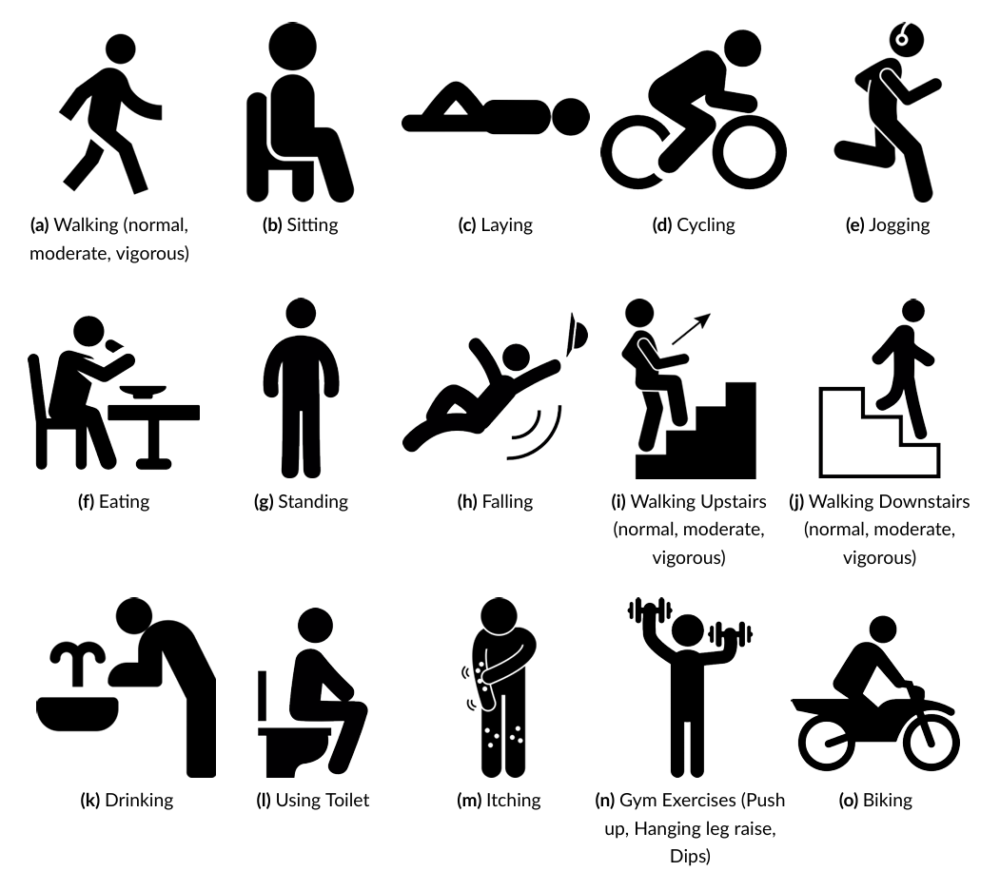

DiabSense: early diagnosis of non-insulin-dependent diabetes mellitus using smartphone-based human activity recognition and diabetic retinopathy analysis with Graph Neural Network
- Objective: To address the global challenge of mitigating undiagnosed non-insulin-dependent diabetes mellitus (type II diabetes).
- Developed, fine-tuned, and assessed a Graph Convolutional Network (Vision GNN) and a Convolutional Neural Network-based model (EfficientNet-B5) to grade the severity of Diabetic Retinopathy (DR) from fundus images.
- Leveraged smartphone tri-axial accelerometer (passive sensing) data to perform Human Activity Recognition (HAR) with a Graph Attention Network (GAT).
- Integrated HAR with DR grading to build a system - DiabSense, and validated the system's outcomes on four experimental subjects by performing clinical A1C tests.
- My contributions: leading the entire research cycle - conceptualization, methodology design, data curation, implementation (PyTorch), visualization (Matplotlib, Plotly), manuscript preparation (LaTeX), and major revisions.






.png)